교통기사 (2007-05-13 기출문제)
1과목: 교통계획
1. 주차시설 현황을 조사할 때 조사시간 중에 주차구역 내 주차1면당 평균 주차차량수를 나타내는 지표는?
- 평균점유율
- 평균회전율
- 평균주차집적율
- 평균주차율
(정답률: 알수없음)

2. 통행배분(Trip Assignment)모형의 유형 중 링크용량을 고려하는 모형에 속하는 것은?
- All-or-nothing 법
- 확률적 평행배분법
- 로짓 모형
- 다이알 모형
(정답률: 알수없음)
3. 4단계 교통수요 추정방법 중 3단계에 해당하는 것은?
- 교통수단선택
- 통행배분
- 통행분포
- 통행발생.
(정답률: 알수없음)
4. 개별행태모형(disaggregate behavioral model)에 대한 설명으로 옳지 않은 것은?
- 개인의 통행특성자료에 근거해서 교통수요를 추정한다.
- 효용이론에 근거해서 모델이 구축된다.
- 종속변수는 통행량이며 독립변수는 존의 사회-경제지표이다.
- 4단계 교통수요 추정모델과 비교해서 여러 가지 과정을 동시에 수행할 수 있는 모델 구축이 가능하다.
(정답률: 알수없음)
5. 다음과 같은 조건을 가진 어느 도심지에서 주치요금이 25% 인상될 때 주차수요의 감소량은?
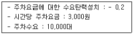
- 500대
- 1,0000
- 1,500대
- 2,000대
(정답률: 알수없음)
6. 교통계획은 계획기간에 따라 단기 ㆍ 중기 ㆍ 장기계획으로 구분되는데, 다음 중 단기교통계획과 비교한 장기교통계획의 특성으로 적합한 것은?
- 다수의 대안
- 서비스 지향적
- 자본집약적
- 피드백 지향적
(정답률: 알수없음)
7. 다음 중 TSM대책의 분석, 설계 및 평가에서 효과척도(MOE)로 볼 수 없는 요소는?
- 평균첨두속도
- 구간교통량
- 대중교통노선의 승차인원
- 자동차 보유율
(정답률: 알수없음)
8. 다음의 교통수요 관리방안과 그 특징에 대한 설명 중 옳지 않은 것은?
- 10부제 운행 - 집행이 용이함
- 자가용 함께 타기 - 사회적 부담이 적음
- 버스 이용하기 - 정치적 수용성이 적음
- 공영주차장 요금인상 - 집행이 용이함
(정답률: 알수없음)
9. 중력모형(gravity model)의 정산과정 및 예측에 투입되어야 할 자료로서 적합하지 않는 것은?
- 목표년도의 노선배정 통행량
- 목표년도의 존별 유입통행량과 유출통행량
- 기준년도의 기종점간 통행량
- 기준년도의 존간 통행시간
(정답률: 알수없음)
10. 편도 15km의 왕복노선을 25km/시의 평균운행속도로 버스를 운행할 때 배차간격 5분을 유지하려면 필요한 차량대수는?
- 10대
- 13대
- 15대
- 16대
(정답률: 알수없음)
11. 다음 중 4단계 추정법에서 통행분포(Trip Distribution)단계에 사용되는 모형에 속하지 않는 것은?
- 균일성장율법
- 중력모형
- 증감률법
- 간섭기회모형
(정답률: 알수없음)
12. 택시요금의 변화에 따라 버스의 수요가 어떻게 변하는가를 보여주는 것은?
- 가격탄성력
- 교차탄성력
- 공급탄성력
- 소득탄성력
(정답률: 알수없음)
13. 다음 중 통행의 기 ㆍ 종점이 모두 조사대상 지역의 바깥지점에 위치하는 교통은?
- 역내 교통
- 역외 교통
- 유입 교통
- 통과 교통
(정답률: 100%)
14. 승객의 여행거리에 관계없이 동일한(고정된) 요금이 부과되는 요금구조는?
- 정기요금제
- 균일요금제
- 구간요금제
- 거리요금제
(정답률: 알수없음)
15. 다음에서 가정기반통행(home-based trip)의 통행량은?
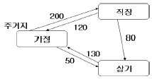
- 250 통행
- 320 통행
- 500 통행
- 580 통행
(정답률: 알수없음)
16. O-D 조사에 사용하는 표본의 크기에 대한 설명 중 가장 올바른 것은?
- 표본의 크기가 증가하면 조사 자료의 정확도는 감소한다.
- 표본의 크기가 증가하면 조사 자료의 정확도의 증가율은 점차 감소한다.
- 통행량이 적은 경우 표본의 수를 증가시키면 통행량이 많을 때보다 오차의 범위가 커진다.
- 통행량이 많은 경우 표본율을 증가시키면 오차의 범위가 커진다.
(정답률: 알수없음)
17. 2㎞ 남북 양방향 도로 구간의 교통량 조사를 위해 이동차량기법을 적용했다. 그 결과가 다음과 같을 때 북쪽으로 향하는 교통류의 교통량은?
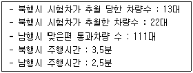
- 1,020대/시
- 760대/시
- 1,440대/시
- 1,210대/시
(정답률: 알수없음)
18. 다음의 IRR(내부수익률)은?
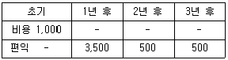
- 5.67%
- 4.67%
- 3.67%
- 2.67%
(정답률: 알수없음)
19. 기종점 조사에서 폐쇄선(Cordon Line) 설정시 고려할 사항으로 부적절한 것은?
- 폐쇄선을 횡단하는 도로나 철도 등이 가급적 최대가 되게 한다.
- 폐쇄선을 가급적 행정구역 경계선과 일치시킨다.
- 도시 주변에 인접한 위성도시나 장래 도시화 지역을 가급적 폐쇄선 내에 포함시킨다.
- 주변에 동이 위치하면 폐쇄선 내에 포함하도록 한다.
(정답률: 알수없음)
20. 각종 대중교통수단에 대한 설명 중 옳지 않은 것은?
- 지하철은 대량성, 안정성 면에서 우수하다.
- 지하철은 버스와 연계에 따른 불편이 있을 수 있다.
- 버스는 건설비가 많이 소요되나 정시성이 우수하다.
- 버스는 수요에 대처하기 쉬운 반면, 교통혼잡을 일으키는 단점이 있다.
(정답률: 알수없음)
2과목: 교통공학
21. 교통량 반응식 신호등에 대한 설명으로 옳은 것은?
- 교통량의 변화와는 상관없이 규칙적인 신호 주기가 반복된다.
- 연동화하기 어려운 교차로에는 사용할 수 없다.
- 구조가 간단하고 설치비용이 저렴하다.
- 교통량의 시간별 변동이 클 경우 지체의 최소화가 가능하다.
(정답률: 알수없음)
22. 어느 도로의 첨두시간 교통량을 15분 간격으로 측정한 결과 1500, 1800, 1400, 1600대 였다. 첨두시간계수(PHF)는?
- 0.755
- 0.875
- 0.925
- 1.143
(정답률: 알수없음)
23. 다음 중 교차로의 포화교통량(Saturation Flow Rate)산정시 고려되지 않는 요소는?
- 유효녹색 시간비
- 차로폭
- 버스정류장의 위치
- 주차허용구간
(정답률: 알수없음)
24. 차량운행 중 외부자극에 대한 인간의 신체적 반응 과정인 PIEV 과정에 속하지 않은 것은?
- 인지(Perception)
- 판단(Intellection)
- 회피(Evasion)
- 의지(Volition)
(정답률: 알수없음)
25. 49대 차량에 대한 속도조사를 한 결과 평균 60km/h, 분산 36을 얻었다. 이 교통류 속도의 모평균을 추정함에 있어서 신뢰수준 95%에서 허용오차를 ± 0.5km/h로 하자면 필요한 표본수는?
- 97대
- 272대
- 386대
- 554대
(정답률: 알수없음)
26. 움직이는 차량들의 차두간격(Headway)을 확률분포로 나타내는 확률분포함수는?
- 기하 분포
- Binomial 분포
- 음지수 분포
- 음이항 분포
(정답률: 알수없음)
27. 주기가 같은 인접한 두 개의 교차로를 연동시키려고 한다. 두 교차로간 거리가 400m 이고 연동속도는 50km/h 일 때, 필요한 옵셋(Offset)은? (단, 두 교차로 모두 녹색신호 시작 때 대기차량이 없음)
- 10초
- 28.8초
- 72.2초
- 125초
(정답률: 알수없음)
28. Greenshields의 속도-밀도 모형에서 자유속도(Uf)가 시속80km 이고 혼잡밀도(Kj)가 km 당 80대 일 경우 최대 교통류율은?
- 800 대/시
- 1,600 대/시
- 2,133 대/시
- 3,200 대/시
(정답률: 알수없음)
29. 도시내 교차로의 차량당 평균지체도를 산정하기 위하여 10초 간격으로 교차로에 정지하는 차량을 조사한 결과 5분 동안에 통과한 150대 중 120대의 차량이 정지된 결과를 얻었다. 이 교차로를 통과한 차량들의 평균 지체도는?
- 6초
- 8초
- 12초
- 30초
(정답률: 알수없음)
30. 다음의 교통량 조사에 대한 설명 중 옳지 않은 것은?
- 연평균일교통량(AADT)은 연간총교통량을 365로 나눈 값으로 교통계획의 기초자료로 사용된다.
- 평균일교통량(ADT)은 휴일을 제외한 평일의 평균교통량으로 교통계획의 보완자료로 이용된다.
- 교통량의 요일별 또는 계절별(또는 월별) 변동패턴을 파악하기 위해서는 상시조사나 보정조사 자료를 이용한다.
- 교통량 조사는 2~3시간 동안의 첨두 15분 교통류율을 구하는 경우가 많으므로, 대부분의 교통량 조사는 수동식으로 조사된다.
(정답률: 알수없음)
31. 다음 중 도로상을 운행하는 차량의 구간속도 산출시 이용되는 조사방법이 아닌 것은?
- 번호판 판독법
- 시험차량 운행법
- 주행차량 이용법
- 노측면접법
(정답률: 알수없음)
32. 정지한 상태에서 30 ㎞/h로 가속하는데 승용차는 2.3초가 걸리고, 레미콘 트럭은 7.1초가 걸렸다. 이때 레미콘 트럭이 가속기간 동안 주행한 거리는 승용차의 가속기간 동안 주행한 거리의 약 몇 배인가?
- 3배
- 6배
- 9배
- 12배
(정답률: 알수없음)
33. 황색 신호 길이를 계산하기 위해 필요한 차량의 임계 감속도는 보통 얼마인가?
- 3 m/s2
- 4 m/s2
- 5 m/s2
- 6 m/s2
(정답률: 알수없음)
34. 서비스수준별 교통류의 상태에 관한 설명으로 틀린 것은?
- A : 사용자 개개인들은 교통류 내의 다른 사용자의 출현에 실질적으로 영향을 받지 않는다.
- C : 교통류 내의 다른 차량과의 상호작용으로 인하여 통행에 상당한 영향을 받기 시작한다.
- E : 교통량이 조금 증가하거나 작은 혼란이 발생하여도 와해 상태가 발생한다.
- FFF : 과도한 교통수요로 혼잡이 심각한 상태이며 차량이 대상구간의 전방 신호교차로를 통과하는데 평균적으로 2~3주기 정도의 시간이 필요하다.
(정답률: 알수없음)
35. 용량에 관한 다음 설명 중 틀린 것은?
- 용량을 분석하는 목적은 도로를 효율적으로 이용하고, 도로투자를 적절히 하도록 하는데 있다.
- 용량 분석의 대상이 되는 도로의 경우에는 접근기능이 이동기능보다 더 중요하다고 할 수 있다.
- 용량은 분석하는 데는 해당 도로의 통행 속도, 통행 시간, 통행 자유도, 안락감 등 서비스수준 개념을 이용한다.
- 용량 분석은 크게 두 가지 연속된 절차를 통해 수행하는데, 그 첫 번째 절차가 주어진 도로가 수용할 수 있는 최대 교통량을 추정하는 것이다.
(정답률: 알수없음)
36. 다음 중 차로수를 결정하는 공식을 올바르게 나타낸 것은?
- N = 첨두설계시간교통량 / 설계서비스교통량
- N = 설계서비스교통량 / 첨두설계시간교통량
- N = 피크시간교통량 / 첨두설계시간교통량
- N = 첨두설계시간교통량 / 피크시간교통량
(정답률: 알수없음)
37. 교통류 모형 중 수학적으로는 가장 단순하고 사용하기 편리하지만, 현실적인 혼잡밀도의 값을 나타내기가 어려운 모형은?
- Greenberg 모형
- Greenshields 모형
- Underwood 모형
- Drake 모형
(정답률: 알수없음)
38. 지역의 구분에 따른 설계시간 계수(K)를 바르게 제시한 것은?
- 도시 0.15, 지방 0.09
- 도시 0.09, 지방 0.15
- 도시 0.⑤, 지방 0.08
- 도시 0.08, 지방 0.⑤
(정답률: 알수없음)
39. 운전자가 실제로 느끼는 속도이며 속도규제, 신호기설치 위치선정, 신호시간계산, 사고분석시 등에 이용되는 속도는?
- 주행속도
- 자유속도
- 구간속도
- 지점속도
(정답률: 알수없음)
40. 주기당 총 손실시간이 10초, 임계이동류의 교통량비 V/S를 합한 값이 0.6 일 때, Webster식을 이용한 최적주기는?
- 30초
- 40초
- 50초
- 60초
(정답률: 알수없음)
3과목: 교통시설
41. 다음 중 설계속도와 가장 관계가 먼 것은?
- 시거
- 편경사
- 곡선반경
- 횡단구배
(정답률: 알수없음)
42. 다음의 정지시거에 대한 설명 중 ( )안에 들어갈 말로 알맞은 것은?
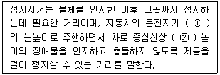
- ① 1.0m, ② 15cm
- ① 1.2m, ② 15cm
- ① 1.0m, ② 10cm
- ① 1.2m, ② 10cm
(정답률: 알수없음)
43. 평면교차로에서의 도류화설계를 위한 기본원칙으로 옳지 않은 것은?
- 운전자가 한 번에 한 가지 이상의 의사결정을 하지 않도록 해야 한다.
- 운전자에게 90˚이상 회전하거나 갑작스럽고 급격한 배향곡선 등의 부자연스런 경로를 주어서는 안된다.
- 운전자가 적절한 인지성을 갖도록 교통섬 내에 시인성을 떨어뜨리는 식수 등을 하여야 한다.
- 필요 이상의 교통섬을 설치하는 것은 피해야 하며, 원칙적으로 도류화가 필요하다 하더라도 좁은 면적에서는 이를 피해야 한다.
(정답률: 알수없음)
44. 지방지역에서의 인터체인지 배치에 관한 설명 중 옳지 않은 것은?
- 본선과 인터체인지에 대한 총비용 편익비가 극대가 되도록 배치
- 인터체인지의 출입교통량이 30,000대/일 이하가 되도록 배치
- 인터체인지 간격이 최소 1.5km, 최대 20km 이하가 되도록 배치
- 인구 30,000명 이상의 도시 부근 또는 인터체인지 세력권 인구가 50,000~100,000명 정도가 되도록 배치
(정답률: 알수없음)
45. 지방지역의 4차로 고속도로에 설치되는 중앙분리대의 최속폭은?
- 1.0m
- 1.5m
- 2.0m
- 3.0m
(정답률: 알수없음)
46. 자동차전용도로(고속도로)의 경우 버스승강장(Flat form)의 폭은 얼마를 표준으로 하는가?
- 1.5m
- 2.0m
- 2.5m
- 3.0m
(정답률: 알수없음)
47. 네 갈래 교차 인터체인지의 대표적 형식인 다이아몬드형 인터체인지에 대한 설명으로 옳지 않은 것은?
- 교통의 우회거리가 짧다.
- 유료도로의 경우 요금소가 4개로 분산되어 관리비가 증대된다.
- 불완전 클로버형에 비해 용지 면적이 많이 소요되므로 건설비가 높다.
- 연결로의 선형이 직선형이어서 유출입 연결로의 길이나 경사계획시 충분히 여유 있는 설계를 하지 않으면 사고발생의 원인이 되기 쉽다.
(정답률: 알수없음)
48. 다음 중 비상주차대의 유효길이 산정과 가장 관계가 깊은 것은?
- 설계기준 자동차 길이
- 접속길이
- 도로의 설계속도
- 진입속도
(정답률: 알수없음)
49. 도로의 포장에 대한 설명 중 옳지 않은 것은?
- 차도의 포장 표면은 미끄럽지 않으며 내구성이 커야한다.
- 측대와 길어깨의 포장은 차도와 동일한 구조로 하여야 한다.
- 적설지방에서는 타이어체인으로 인하여 포장 표면에 손상을 받는 일이 많으므로 마모에 대한 저항이 커야한다.
- 포장된 도로와 포장되지 않은 도로가 교차하는 경우에 포장되지 않은 도로는 접속부로부터 일정 구간을 포장 하도록 한다.
(정답률: 알수없음)
50. 설계속도가 60km/h인 도로에서 최소 평면곡선반경은? (단, 최대 편경사 i = 8%, 횡방향 마찰계수 f = 0.14)
- 104m
- 114m
- 129m
- 139m
(정답률: 알수없음)
51. 다음의 체인탈착장의 설계시 유의사항에 대한 설명 중 옳지 않은 것은?
- 체인탈착장에는 조명설비를 설치한다.
- 체인탈착장으로 사용되는 부분은 포장을 하고, 교통섬을 설치하는 것이 원칙이다.
- 주차면은 보통의 주차면 보다 50cm 정도 넓게 하는 것이 바람직하다.
- 체인탈착장의 경사는 주차 자동차의 종방향으로 2%, 횡방향으로 3% 이하로 하고 배수에 충분한 주의를 기울여야 한다.
(정답률: 알수없음)
52. 다음 중 도로에 보도를 설치하여야 하는 경우, 각종 도로에 따른 보도의 최소 폭의 연결이 옳지 않은 것은?
- 도시지역의 간선도로 : 3.00 m
- 도시지역의 집산도로 : 2.25 m
- 도시지역의 국지도로 : 1.50 m
- 지방지역의 도로 : 2.00 m
(정답률: 알수없음)
53. 어느 주차장의 평균 주차 시간은 2시간이다. 한 대의 차량이 도착했을 때, 이 차량의 주차시간이 1시간을 초과할 확률은?
- 약 30%
- 약 40%
- 약 50%
- 약 60%
(정답률: 알수없음)
54. 도시지역 일반도로의 설계속도가 60km/h 이상, 70km/h 미만일 경우 차로의 최소폭은?
- 2.75m
- 3.00m
- 3.25m
- 3.50m
(정답률: 알수없음)
55. 주차장의 설계기준 자동차를 결정할 때 고려해야 할 사항과 가장 거리가 먼 것은?
- 주차장이 피크로 될 때에 가장 영향을 주는 차종을 설계기준 자동차로 한다.
- 설계기준자동차는장래의 차량 치수변화를 고려하여 결정한다.
- 주차장의 공간을 효과적으로 이용하면서 질서 있는 주차를 기대할 수 있는 차량이어야 한다.
- 과대한 차량은 설계차량으로 사용하지 않는다.
(정답률: 알수없음)
56. 설계속도가 100km/h인 도로의 평면곡선부에 설치하는 완화곡선의 최소 길이는?
- 50 m
- 60 m
- 65 m
- 70 m
(정답률: 알수없음)
57. 다음의 용어에 대한 설명 중 옳지 않은 것은?
- 편경사라 함은 도로 진행방향 중심선의 길이에 대한 높이의 변화 비율을 말한다.
- 길어깨라 함은 도로를 보호하고 비상시에 이용하기 위하여 차도에 접속하여 설치하는 도로의 부분을 말한다.
- 회전차로라 함은 자동차가 우회전, 좌회전 또는 유턴을 할 수 있도록 직진하는 차로와 분리하여 설치하는 차로를 말한다.
- 연결로라 함은 입체도로에서 서로 교차하는 도로를 연결하거나 서로 높이 차이가 있는 도로를 연결해 주는 도로를 말한다.
(정답률: 알수없음)
58. 도로와 철도가 부득이 평면교차를 할 경우, 그 도로의 구조에 관한 설명 중 옳지 않은 것은?
- 건널목 양쪽에서 각각 30m 이내의 구간 (건널목 부분을 포함)은 직선으로 한다.
- 건널목 양쪽에서 각각 30m 이내의 구간의 도로의 종단 경사는 3% 이하로 한다.
- 도로와 철도와의 교차각은 35도 이상으로 한다.
- 건널목에서 철도차량의 최고속도 50㎞/h 미만에서 가시구간의 최소길이는 110m 이다.
(정답률: 55%)
59. 도시지역 도로의 구분 중 주간선도로에 대한 설명으로 옳은 것은?
- 도시지역에 존재하는 자동차 전용도로로서 설계속도가 100~80km/h, 배치간격은 3~6km 정도이다.
- 보통 주구의 경계를 이루고 도시 내 주요교통 유발시설 간을 연결하며 평균 주행거리는 500m~1km, 설계속도는 50~40km/h 정도이다.
- 이동성이 가장 낮고 접근성이 가장 높은 도로이며 통과교통을 배제하는 방향으로 설계 및 운영된다.
- 지역 간 간선도로의 도시 내 통과역할을 담당하므로써 간선도로의 연속성이 지방지역과 도시지역에서 단절되지 않도록 하는 기능을 갖는다.
(정답률: 알수없음)
60. 버스의 최대운행속도가 60km/h, 정류장당 승객수가 2명, 탑승소요시간이 승객 1명당 2초 일 경우, 적정 버스장의 간격은 약 얼마인가? (단, 차량가속도는 2m/sec2, 차량감속도는 0.5m/sec2, 최적 재차인원에 의한 방법 적용)
- 240m
- 668m
- 746m
- 868m
(정답률: 알수없음)
4과목: 도시계획개론
61. 다음 중 가장 관련이 깊은 도시구성형태는?
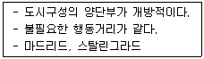
- 격자형
- 방사환상형
- 격자방사형
- 대상형
(정답률: 알수없음)
62. 다음 중 도시 관리계획에 포함되는 내용이 아닌 것은?
- 용도지역 ㆍ 용도지구의 지정 또는 변경에 관한 계획
- 도시개발사업 또는 정비 사업에 관한 계획
- 도시기본계획의 지정 또는 변경에 관한 계획
- 지구단위계획의 지정 또는 변경에 관한 계획
(정답률: 알수없음)
63. 르네상스시대의 도시계획의 특징과 가장 관계가 먼 것은?
- 비대칭성
- 정형성
- 축성(axiality)
- 개방성
(정답률: 알수없음)
64. 도시계획시설 중 보행자전용도로의 구조 및 설치기준에 대한 설명으로 틀린 것은?
- 보행자전용도로와 주간선도로가 교차하는 곳에서 입체교차시설을 설치하고 보행자우선구조로 한다.
- 필요시에는 보행자전용도로와 자전거도로를 함께 설치하여 보행과 자전거통행을 병행할 수 있도록 한다.
- 공공청사 ㆍ 문화시설 등이 보행자전용도로와 연접된 경우에는 이들 공간과 분리시켜 독립된 보행공간이 조성되도록 한다.
- 차도와 접하거나 해변 ㆍ 절벽 등 위험성이 있는 지역에 위치하는 경우에는 안전보호시설을 설치한다.
(정답률: 알수없음)
65. 다음 중 상업용지에서의 용도별 획지 형태로서 획지 깊이보다 획지 폭이 짧은(세장비가 1.0 이상) 경우에 가장 알맞은 시설은?
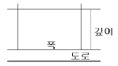
- 여관
- 우체국
- 주유소
- 백화점
(정답률: 알수없음)
66. 다음 중 주 구내의 주거단위에 직접 접근되는 도로로서 이동성이 가장 낮고 접근성이 가장 높은 도로는?
- 주간선도로
- 보조간선도로
- 집산도로
- 국지도로
(정답률: 알수없음)
67. 다음 중 교통광장에 속하지 않는 것은?
- 중심대광장
- 교차점광장
- 역전광장
- 주요시설광장
(정답률: 알수없음)
68. 다음 중 르 꼬르뷔지에가 주장한 도시계획의 원칙과 가장 거리가 먼 것은?
- 도시 중심지구의 과밀을 완화하여 혼잡을 구제할 것
- 거주밀도를 낮출 것
- 교통기관을 도시에 집중시켜 교통수단을 늘릴 것
- 수목면적을 넓혀 충분한 공지와 공원을 확보할 것
(정답률: 알수없음)
69. 도시 관리계획의 입안에 관하여 주민의 의견을 청취하고가 하는 때에는 도시 관리계획안을 최소 몇 일 이상 일반이 열람할 수 있도록 하여야 하는가?
- 7일
- 14일
- 20일
- 30일
(정답률: 알수없음)
70. 도시계획의 기본이자 백미라고 할 수 있으며, 현재의 토지이용상황을 조사 ㆍ 분석하여 장래의 토지공간수요를 추정하고, 이를 한정된 토지 위에 합리적으로 배치 또는 유도 하는 계획은?
- 택지개발계획
- 도시시설정비계획
- 주요시설물입지계획
- 토지이용계획
(정답률: 알수없음)
71. 다음 중 광역도시계획의 수립권자가 될 수 없는 자는?
- 군수
- 특별시장
- 건설교통부장관
- 도지사
(정답률: 알수없음)
72. 격자형 가로망의 특성에 대한 설명으로 틀린 것은?
- 지형이 평탄한 도시에 적합하다.
- 도로기능의 다양성이 결여되기 쉽다.
- 고대 및 중세 봉건도시에서 흔히 볼 수 있다.
- 중심지를 기점으로 간선도로를 따라 도시개발축이 형성된다.
(정답률: 알수없음)
73. 다음 중 개발행위허가를 받아야 하는 행위의 기준에 속하지 않는 것은?
- 관계 법령에 의한 허가 ㆍ 인가를 받지 아니하고 행하는 너비 5미터 이하로의 토지의 분할
- 녹지지역 안에서 건축물의 울타리 안에 위치하지 아니한 토지에 물건을 10일 이상 쌓아놓는 행위
- 흙 ㆍ 모래 ㆍ 자갈 ㆍ 바위 등의 토석을 채취하는 행위(토지의 형질변경을 목적으로 하는 것은 제외)
- 절토 ㆍ 성토 ㆍ 정지 ㆍ 포장 등의 방법으로 토지의 형상을 변경하는 행위와 공유수면의 매립(경작을 위한 토지의 형질변경은 제외)
(정답률: 알수없음)
74. 다음 중 과밀도시의 대표적인 도시문제와 가장 관계가 먼 것은?
- 교통혼잡과 그로 인한 도시공해의 문제
- 직장과 주거가 지속적으로 혼재됨으로써 주거환경의 악화문제
- 기반시설과 공공시설 등 생활환경시설의 부족문제
- 소득격차와 도시빈민 등의 사회적 문제
(정답률: 알수없음)
75. 상업지역의 종류가 아닌 것은?
- 준상업지역
- 중심상업지역
- 유통상업지역
- 근린상업지역
(정답률: 알수없음)
76. 지구단위계획의 성공적인 실현을 위해 필요한 조건에 해당되지 않는 것은?
- 공공의 재정적 지원
- 주민참여제도의 활성화
- 건축규제의 예외성 인정
- 개발계획중심의 계획 수립
(정답률: 알수없음)
77. 다음은 일반적인 계획과정의 행위 목록이다. 계획과정을 계획 단계별로 올바르게 열거한 것은?
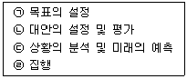
- ㉠-㉡-㉢-㉣
- ㉠-㉢-㉡-㉣
- ㉢-㉠-㉡-㉣
- ㉢-㉡-㉠-㉣
(정답률: 알수없음)
78. 도시계획시설의 결정 ㆍ 구조 및 설치기준에 관한 규칙에 따른 도로의 규모별 구분에서 대로의 기준은?
- 폭 40m 이상 70m 미만인 도로
- 폭 25m 이상 40m 미만인 도로
- 폭 20m 이상 35m 미만인 도로
- 폭 30m 이상 45m 미만인 도로
(정답률: 알수없음)
79. 단지계획을 수립하기 위한 일반적인 원칙으로서 올바르지 않은 것은?
- 단지의 물리적, 사회경제적, 지리적, 문화적 특성을 반영하고, 수용 능력의 한계와 잠재력을 분석하여 안정하고 편리한 단지를 계획한다.
- 장래에 요구되는 개발 수요와 활동을 정확하게 예측하여 개별 건축물에 대하여 상세하게 계획해야 한다.
- 단지 내에서 발생하는 각종 활동을 원활하게 연결하여 안전성과 편리성을 도모한다.
- 환경오염의 발생을 방지하고, 적절한 일조, 채광, 통풍을 확보하여 건강하고 쾌적한 환경을 확보한다.
(정답률: 알수없음)
80. 현재 인구 150만의 도시가 있다. 연평균 증가율 r=4%, 등차급수에 의해 증가한다면 5년 후의 추정인구는 얼마인가?
- 108만명
- 140만명
- 180만명
- 206만명
(정답률: 알수없음)
5과목: 교통관계법규
81. 다음 중 국도에 대한 도로의 관리청은
- 도지사
- 건설교통부장관
- 군수
- 경찰청장
(정답률: 알수없음)
82. 차량의 통행 우선순위에 대한 설명 중 맞는 것은?
- 관용차가 민간차보다 우선함이 원칙이다.
- 차량의 중량, 형식 및 가격 등을 고려하여 통행 우선순위를 정한다.
- 법상의 규정은 없고 운전자가 교통상황에 따라 정한다.
- 긴급용무 및 최고속도에 따라 운선순위를 규정하고 있다.
(정답률: 알수없음)
83. 다음 중 주차금지 장소의 기준으로 옳지 않은 것은?
- 소화전으로부터 5미터 이내의 곳
- 다리 위
- 터널 안
- 화재경보기로부터 5미터 이내의 곳
(정답률: 알수없음)
84. 도로법상 도로의 관리청은 도로의 구조에 대한 손궤, 미관의 보존 또는 교통에 대한 위험을 방지하기 위하여 도로의 경계선으로 부터 몇 m를 초과하지 아니하는 범위 안에서 접도구역으로 지정할 수 있는가?
- 20m
- 30m
- 40m
- 50m
(정답률: 82%)
85. 도시교통정비기본계획 수립을 위하여 실시하는 기초조사 내용이 아닌 것은?
- 인구 등 사회 ㆍ 경제지표 현황 및 전망
- 자동차보유 현황 및 증가추세
- 주간도로 및 교차로에서의 교통량의 현황 및 그 변화추이
- 주차장 현황 및 확충계획
(정답률: 알수없음)
86. 관할도지사가 그 노선을 인정하는 것이 아닌 것은?
- 도청 소재지로부터 군청 소재지에 이르는 도로
- 군청 소재지 상호간을 연결하는 도로
- 군청 소재지로부터 읍사무소 소재지에 이르는 도로
- 도내의 비행장에서 이와 밀접한 관계가 있는 고속국도를 연결하는 도로
(정답률: 알수없음)
87. 다음 중 교통안전관리자가 될 수 없는 자에 속하지 않는 사람은?
- 교통안전관리자 자격의 취소처분을 받은 날부터 2년 6개월이 경과한 자
- 금고 이상의 실형을 선고받고 그 집행이 종료된 날부터 1년이 경과한 자
- 금고 이상의 형의 집행유예 선고를 받고 그 유예기간 중에 있는 자
- 한정치산자
(정답률: 알수없음)
88. 다음 중 부설주차장의 설치대상시설물 종류에 따른 설치기준이 틀린 것은?
- 의료시설(정신병원ㆍ요양원 및 격리병원 제외) : 시설면적 150m2당 1대
- 숙박시설 : 시설면적 150m2당 1대
- 판매 및 영업시설 : 시설면적 150m2당 1대
- 방송국 : 시설면적 150m2당 1대
(정답률: 알수없음)
89. 시장 ㆍ 군수 또는 구청장이 노외주차장 관리자에게 감독상 필요한 명령을 하고자 할 때에는 서면으로 하는 것이 원칙이다. 다음 중 기재할 사항이 아닌 것은?
- 노외주차장의 위치 및 명칭
- 명령을 발하는 이유
- 노외주차장의 크기
- 명령불이행에 대한 조치내용
(정답률: 알수없음)
90. 전방에 횡단보도가 있음을 알리는 횡단보도예고표시의 설치위치로 가장 알맞은 것은?
- 횡단보도 전 30미터 노상
- 횡단보도 전 50미터 내지 60미터 노상
- 횡단보도 전 150미터 노상
- 횡단보도 전 90미터 내지 100미터 노상
(정답률: 알수없음)
91. 다음의 신호의 시기에 관한 기준 내용 중 ( )안에 들어갈 말로 가장 알맞은 것은?
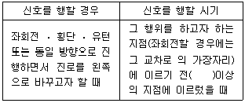
- 10 미터
- 30 미터
- 50 미터
- 100 미터
(정답률: 알수없음)
92. 지주식주차장으로서 지하식 또는 건축물식에 의한 노외주차장의 차로 기준에 대한 설명 중 옳은 것은?
- 높이는 주차바닥면으로부터 2.0m 이상이어야 한다.
- 굴곡부는 자동차가 최소 3m이상의 내변반경으로 회전이 가능하도록 하여야 한다.
- 경사로의 종단구배는 직선부분에서는 17%, 곡선부분에서는 14%를 초과하여서는 아니된다.
- 주차대수규모가 50대 이상인 경우의 경사로는 너비 5m이상인 2차선의 차로를 확보하거나 진 ㆍ 출입차로를 통합하여야 한다.
(정답률: 알수없음)
93. 고속도로에서 야간에 차량고장시 고장차량표지 외에 사방 몇 미터 지점에서 식별할 수 있는 적색의 섬광신호ㆍ전기제등 또는 불꽃신호를 추가로 설치하여야 하는가?
- 200m
- 300m
- 400m
- 500m
(정답률: 알수없음)
94. 도로교통법상의 용어 정의로 옳지 않은 것은?
- 길가장자리구역이란 보도와 차도가 구분된 도로에서 차량운전자의 안전을 보호하기 위하여 안전표지등으로 그 경계를 표시한 부분을 말한다.
- 안전표지란 교통의 안전에 필요한 주의 ㆍ 규제 ㆍ 지시 등을 표시하는 표지판 또는 도로의 바닥에 표시하는 기호 ㆍ 또는 선을 말한다.
- 정차란 운전자가 5분을 초과하지 아니하고 차를 정지시키는 것으로서 주차외의 정지상태를 말한다.
- 안전지대란 도로를 횡단하는 보행자나 통행하는 차마의 안전을 위하여 안전표지나 그와 비슷한 공작물로서 표시한 도로의 부분을 말한다.
(정답률: 알수없음)
95. 다음 중 상업지역의 세분에 속하지 않은 것은?
- 중심상업지역
- 일반상업지역
- 준상업지역
- 유통상업지역
(정답률: 64%)
96. 다음의 도로에 대한 설명 중 옳지 않은 것은?
- 도로는 고속도로와 일반도로로 구분한다.
- 고속도로 중 도시지역에 소재하는 고속도로는 도시고속도로로 한다.
- 지방지역에 소재하는 일반도로 중 주간선도로는 국도이다.
- 군도는 국지도로의 기능만을 수행한다.
(정답률: 알수없음)
97. 광역도시계획의 승인을 얻고자 할 때 광역도시계획안에 첨부할 서류로 부적합한 것은?
- 기초조사 결과
- 공청회개최 결과
- 관계 시도의 의회와 관계 시장 또는 군수의 의견청취 결과
- 광역교통위원회의 자문을 거친 결과
(정답률: 알수없음)
98. 보행자의 통행 방법에 대한 설명으로 옳지 않은 것은?
- 보행자는 보도와 차도가 구분된 도로에서 도로공사 등으로 보도의 통행이 금지된 경우나 그 박의 부득이한 경우를 제외하고 언제나 보도로 통행하여야 한다.
- 보행자는 보도와 차도가 구분되지 아니한 도로에서는 도로의 우측으로 통행하여야 한다.
- 보행자는 모든 차의 바로 앞이나 뒤로 횡단하여서는 아니되지만, 횡단보도를 횡단하거나 신호기 또는 경찰공무원등의 신호 또는 지시에 따라 도로를 횡단하는 경우에는 그러하지 아니하다.
- 보행자는 안전표지 등에 의하여 횡단이 금지되어 있는 도로의 부분에서 그 도로를 횡단하여서는 아니된다.
(정답률: 알수없음)
99. 환경 ㆍ 교통 ㆍ 재해 등에 관한 영향평가법 및 시행령에서 정하고 있는 재협의 사유에 해당하지 않는 것은?
- 협의내용을 통보받은 후 대통령령이 정하는 기간인 5년 이내에 사업을 착공하지 아니한 경우
- 변경되는 사업, 시설 규모의 증가가 통보된 협의내용에 포함된 규모보다 100분의 30 이상 증가하는 경우
- 토지의 이용을 변경하거나 시설의 배치를 변경하여 협의내용에 포함된 교통개선대책의 실효성이 현저히 감소된 경우와 사업지 외부교통개선대책의 이행이 불가능한 경우
- 교통개선대책의 이행허용오차의 범위 내에서 교통개선대책을 변경하는 경우
(정답률: 알수없음)
100. 건설교통부장관이 도시교통의 원활한 소통과 교통편의의 증진을 위하여 도시교통정비지역으로 지정 ㆍ 고시할 수 있는 도시의 상주인구기준은?
- 상주인구 8만 이상
- 상주인구 10만 이상
- 상주인구 15만 이상
- 상주인구 20만 이상
(정답률: 알수없음)
6과목: 교통안전
101. 교통사고 조사에서 최초 접촉 지점(FCP)은 어느 차량이 중앙선을 침범했는지의 판정 등 사고해석이 매우 중요하다. 다음 중 최초 접촉 지점을 판정하는데 필요한 시항과 가장 관계가 먼 것은?
- 스키드마크가 변형된 위치
- Yaw마크의 길이
- 차체의 파손위치
- Spatter의 위치
(정답률: 알수없음)
102. 교통사고 유발요인을 인적요인, 차량원인, 환경요인으로 구분하였을 때, 다음 중 인적요인에 속하지 않는 것은?
- 운전자의 취업환경
- 운전자의 적성
- 운전자의 운전습관
- 운전자의 질병
(정답률: 알수없음)
103. 사고지점도에 대한 설명으로 틀린 것은?
- 사고지점도는 통상 월단위로 관리된다.
- 사고지점도는 사고가 집중적으로 발생하는 지점의 신속한 시각적 색인을 제공한다.
- 지방부에서는 축적 1:50,000의 지도가 일반적으로 사용된다.
- 다수의 희생자(사망 또는 부상)를 포함하는 대형사고에 의한 왜곡을 피하기 위하여 희생자수 대신 사고건수를 나타내는 것이 일반적이다.
(정답률: 알수없음)
104. 자동차 운전시에 발생하는 사각(死角)의 요소에 해당 하지 않는 것은?
- 자동차의 구조상에서 생기는 사각
- 소음으로 인하여 생기는 사각
- 다른 장애물로 인하여 생기는 사각
- 눈의 기능으로 인하여 생기는 사각
(정답률: 알수없음)
1⑤. 사고 경험에 기초한 위험지점 선정을 위한 기법으로 모든 규모의 체계와 모든 범위의 교통량에 적용될 수 있으며 사고 발생은 포아송분포를 따른다는 가정에 기초한 기법은?
- 사고건수법
- 사고건수-율법
- 율-품질관리법
- 사고율법
(정답률: 알수없음)
106. 긴 직선구간 후에 나타나는 급 곡선구간은 사고다발지점인 경우가 많다. 이러한 지점에 대한 개선대책과 가장 관계가 먼 것은?
- 도로의 선형개량
- 방호책 설치
- 시선유도표지 설치
- 도로반사경 설치
(정답률: 알수없음)
107. 연평균 5건의 교통사고가 발생하는 한 교차로에 1년 동안 3건 이상의 교통사고가 발생할 확률은? (단, 일정기간 동안의 교통사고가 발생할 확률은 포아송분포를 따르는 것으로 가정한다.)
- 0.655
- 0.765
- 0.875
- 0.985
(정답률: 알수없음)
108. 어느 지점의 연간 교통사고 건수는 20건, 일교통량은 1,000대이다. 이 지점에 교통안전시설을 설치하는 경우 예상되는 사고감소율은 20%, 장래의 일교통량은 1,500대로 예상되는 경우, 예측되는 사고감소 건수는?
- 5건
- 6건
- 7건
- 8건
(정답률: 알수없음)
109. 체중 75kg인 운전자에 대하여 사고발생 2시간 후에 혈중알코올농도를 측정하였더니 0.06%가 나왔다. 사고 당시의 혈중 알콜농도는 얼마로 추정되는가? (단, 체중 75kg인 사람의 시간당 혈중 알콜농도감소량 = 0.021%)
- 0.018%
- 0.182%
- 0.150%
- 0.102%
(정답률: 알수없음)
110. 어느 차량이 주행 중 도로를 벗어나 9m 아래의 계곡으로 떨어져 도로 끝에서 수평거리 20m 인 지점에 추락하였다. 이 차량이 벗어날 때의 주행속도는 얼마인가?
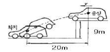
- 약 15 km/h
- 약 27 km/h
- 약 53 km/h
- 약 75 km/h
(정답률: 알수없음)
111. 교통안전의 효과를 측정하기 위한 분석적 틀 중, 사업시행전의 자료를 구할 수 없을 경우에 적용되는 기법은?
- 통제지점에 의한 사전 ㆍ 사후분석
- 사전 ㆍ 사후분석
- 비교평행분석
- 사고비용분석
(정답률: 알수없음)
112. 다음 안전대책 중 안전성과 이동성이 상충되지 않는 것은?
- 속도제한
- 과속방지턱
- 에어 백
- 교통신호에서의 신호현시
(정답률: 알수없음)
113. 다음 중 일방통행을 실시하여 감소시킬 수 있는 사고 유형과 가장 거리가 먼 것은?
- 측면추돌사고
- 정면충돌사고
- 추돌사고
- 단독사고
(정답률: 알수없음)
114. 미국 ITE(교통공학회)의 교통공학 조사편람에서 제시한 개선 대안 제안을 위한 위험지점 분석의 4단계에 대한 바른 순서는?
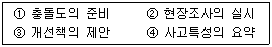
- ②-①-④-③
- ①-④-②-③
- ①-②-④-③
- ①-②-③-④
(정답률: 알수없음)
115. 다음 중 도로에 대한 충돌전 안전대책과 가장 관계가 먼 것은?
- 유도표시 시설
- 도로기하 개선
- 시야 확보
- 충격완화시설 설치
(정답률: 알수없음)
116. 우리나라 교통사고 중에서 치사율이 가장 높은 사고는?
- 자동차 대 열차
- 자동차 대 자동차
- 자동차 대 경운기
- 자동차 대 이륜차
(정답률: 알수없음)
117. 어느 도로를 주행하다 급정거한 차량의 활주흔을 조사한 결과 30m가 나타난 다음 5m를 지나서 다시 20m가 계속되었다. 마찰계수를 0.5라 할 때 이 차량의 제동 전 초기속도는?
- 78.1 km/h
- 79.7 km/h
- 82.4 km/h
- 83.0 km/h
(정답률: 50%)
118. 어떤 장소에서 짧은 시간 동안 수시로 충돌에 근접하는 교통현상을 관측하여 그 장소의 교통사고위험성을 평가하는 방법은?
- 회귀분석모형법
- Rate9Quality Control
- 사고율법
- 교통상충 조사방법
(정답률: 알수없음)
119. 교통사고방지대책을 실시할 때 유의해야 할 사항과 가장 관계가 먼 것은?
- 도로이용자와 도로 인근주민의 의견, 관련 행정기관의 의견을 수렴하도록 한다.
- 다른 도로계획과 어긋나지 않도록 한다.
- 교통섬을 설치할 때는 사전에 페인트나 교통콘 또는 모래주머니 등을 이용하며 실험적으로 실시해 본 다음 그 결과를 재검토한 후에 본격적으로 구조물을 설치하는 것이 바람직하다.
- 여러 가지 대책을 혼용해서 적용하여서는 안된다.
(정답률: 알수없음)
120. 2,000kg 무게의 차량이 5% 경사의 오르막길을 오르고 있을 때 경사저항은?
- 50kg
- 75kg
- 100kg
- 150kg
(정답률: 알수없음)